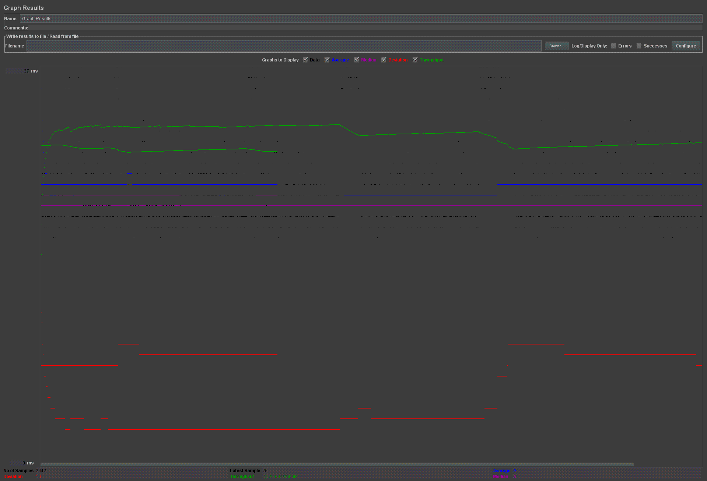
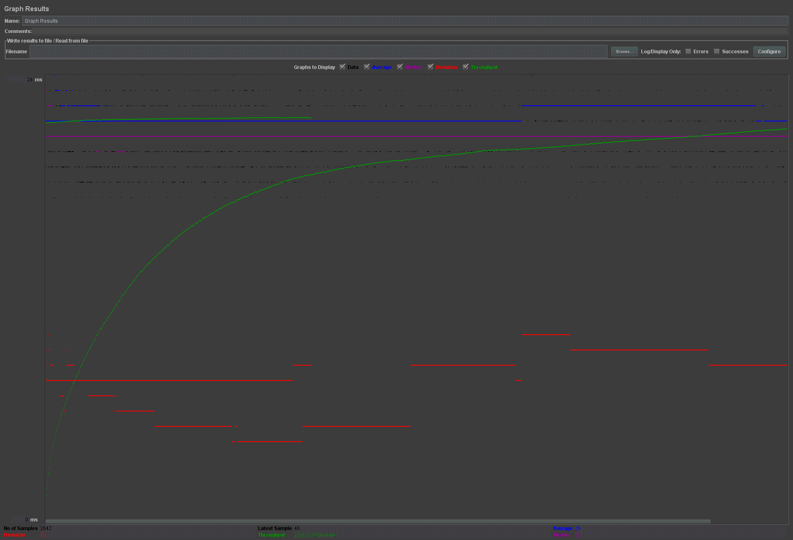

| Scaled version cases |
Graph Results Screenshot |
Average Query Time(ms) |
Average Search Servlet Time(ms) |
Average JDBC Time(ms) |
Analysis |
| Case 1: HTTP/1 thread |
 |
26 |
Average TS = 20176.788777017 seconds
Average TJ = 0.002714325 seconds
|
Average TS = 91751.872281508 seconds
Average TJ = 0.002759104 seconds |
-- |
| Case 2: HTTP/10 threads |
 |
26 |
Average TS = 20780.018984613 seconds
Average TJ = 0.003122861 seconds
|
Average TS = 92355.079176902 seconds
Average TJ = 0.003076115 seconds
|
-- |
| Case 3: HTTP/10 threads/No prepared statements |
 |
?? |
?? |
?? |
-- |
| Case 4: HTTP/10 threads/No connection pooling |
 |
26 |
Average TS = 3.9185775 seconds
Average TJ = 0.003429095 seconds
|
Average TS = 3.816844647 seconds
Average TJ = 0.003757696 seconds
|
-- |